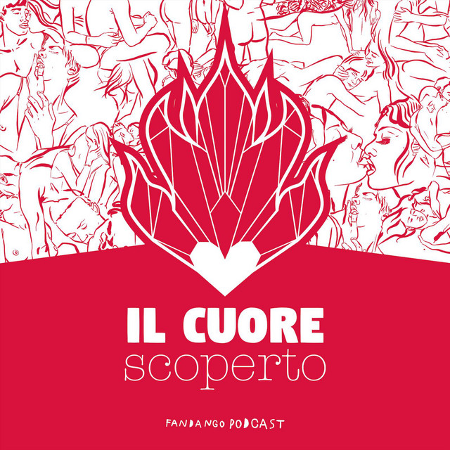

Il cuore scoperto – Podcast
| Titolo | Il cuore scoperto |
|---|---|
| Autore | Associazione Vanvera |
| Contributori | Storie Libere; Institut Français Italia; Lush Italia; Produzioni dal Basso (crowdfunding) |
| Descrizione | Podcast che esplora l’educazione sentimentale, le relazioni, le emozioni, le norme di genere e il linguaggio dell’amore. È la versione italiana adattata del podcast francese "Le Cœur sur la table" di Victoire Tuaillon. |
| Editore | Storie Libere |
| Anno | 2024 |
| Lingua | Italiano |
| Struttura e durata | 11 episodi (30–50 min), 1 trailer, 1 prologo, 1 epilogo, 2 bonus track |
| Ascolta su Spotify | 🌐 Vai al podcast |
Contenuti e contesto
Il podcast "Il cuore scoperto" è una produzione dell'Associazione Vanvera, in collaborazione con Storie Libere e altri partner europei. Adattamento italiano del podcast francese "Le coeur sur la table", propone una riflessione profonda, emotiva e politica sulle relazioni e gli affetti, da una prospettiva transfemminista. Nella puntata introduttiva, viene illustrato l'obiettivo del progetto, ovvero rieducarsi all'amore, alla vulnerabilità e all'ascolto attivo attraverso le voci di chi vive e interpreta il mondo con uno sguardo critico e aperto.